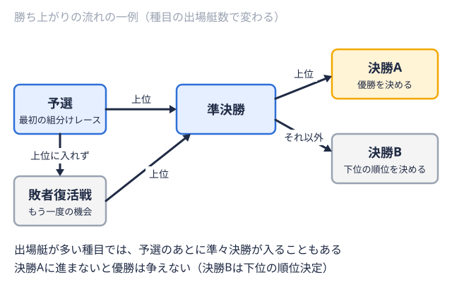
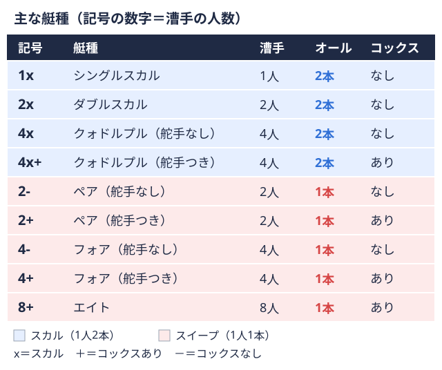
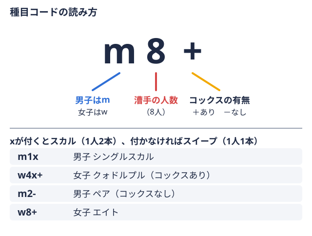
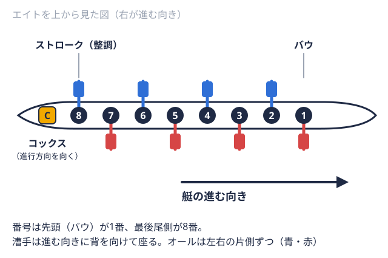

大学の軌跡 2025-12-31
神戸大学ボート部のインカレ全記録｜出場史と最高成績
神戸大学は全日本大学ローイング選手権（インカレ）に2000年度から2025年度まで出場し、収録期間中の通算出場レース数は287レース、決勝進出は21回を数える。本ページでは年度別の全成績を一覧にまとめ、出場傾向を振り返る。
最高成績ハイライト
神戸大学は全日本大学ローイング選手権の決勝A優勝を決める最上位の決勝。優勝するにはこのレースに進む必要がある。 
- 2025年度 女子ペア2人乗りで、1人1本のオールを持つ艇。舵を取る人が乗る型もある。

：決勝A 優勝（タイム 07:54.64） - 2022年度 女子舵手つき舵を取る専任の人が艇に乗る種目。種目コードでは「+」で表す。

フォア4人乗りで、1人1本のオールを持つ艇。舵を取る人が乗る型もある。：決勝A 3位入賞（タイム 07:43.83）
年度別成績
| 年度 | 種目 | 最高到達ラウンド | 着順/タイム |
|---|---|---|---|
| 2025 | 男子ペア | 決勝B優勝を決める決勝に進めなかった艇が、下位の順位を決めるレース。 | 4位（07:25.11） |
| 2025 | 女子シングルスカル1人乗りの艇。1人が左右2本のオールを持つ。種目コードは「1x」。 | 敗者復活 | — |
| 2025 | 女子ペア | 決勝A（優勝決定） | 1位（07:54.64） |
| 2024 | 男子舵手つきフォア | 決勝A（優勝決定） | 6位（06:53.22） |
| 2024 | 女子舵手つきフォア | 決勝B | 1位（07:28.42） |
| 2023 | 男子舵手つきフォア | 敗者復活 | — |
| 2023 | 男子エイト漕ぐ人8人と舵を取る人1人が乗る最大級の艇。1人1本のオールを持つ。  | 敗者復活 | — |
| 2023 | 女子舵手つきフォア | 決勝A（優勝決定） | 6位（07:35.72） |
| 2023 | 女子エイト | 決勝A（優勝決定） | 5位（07:23.86） |
| 2022 | 男子エイト | 決勝B | 5位（06:15.89） |
| 2022 | 女子シングルスカル | 決勝C | 4位（09:08.77） |
| 2022 | 女子舵手つきフォア | 決勝A（優勝決定） | 3位（07:43.83） |
| 2020 | 男子エイト | 敗者復活 | — |
| 2020 | 女子舵手つきフォア | 決勝B | 3位（07:34.59） |
| 2019 | 男子舵手なし舵を取る専任の人が艇に乗らない種目。種目コードでは「-」で表す。フォア | 敗者復活 | — |
| 2019 | 男子舵手つきフォア | 敗者復活 | — |
| 2019 | 男子エイト | 敗者復活 | — |
| 2019 | 女子舵手つきフォア | 決勝B | 4位（07:49.62） |
| 2019 | 女子舵手つきクォドルプル4人乗りで、全員が左右2本のオールを持つ艇。種目コードは「4x」。 | 敗者復活 | — |
| 2018 | 男子エイト | 敗者復活 | — |
| 2018 | 女子舵手つきフォア | 決勝B | 4位（07:37.21） |
| 2018 | 女子舵手つきクォドルプル | 敗者復活 | — |
| 2017 | 男子エイト | 敗者復活 | — |
| 2017 | 女子ダブルスカル2人乗りの艇。2人とも左右2本のオールを持つ。種目コードは「2x」。 | 敗者復活 | — |
| 2017 | 女子舵手つきクォドルプル | 準決勝決勝に進む艇を決めるラウンド。上位の艇が優勝を争う決勝に進む。 | — |
| 2016 | 男子エイト | 敗者復活 | — |
| 2016 | 女子舵手つきクォドルプル | 準決勝 | — |
| 2015 | 男子舵手つきフォア | 敗者復活 | — |
| 2015 | 男子エイト | 敗者復活 | — |
| 2015 | 女子シングルスカル | 敗者復活 | — |
| 2015 | 女子舵手つきクォドルプル | 決勝B | 3位（07:18.79） |
| 2014 | 男子エイト | 敗者復活 | — |
| 2014 | 女子シングルスカル | 敗者復活 | — |
| 2014 | 女子ダブルスカル | 敗者復活 | — |
| 2014 | 女子舵手つきクォドルプル | 決勝B | 2位（07:17.08） |
| 2013 | 男子ダブルスカル | 敗者復活 | — |
| 2013 | 男子舵手つきフォア | 敗者復活 | — |
| 2013 | 男子エイト | 敗者復活 | — |
| 2013 | 女子シングルスカル | 準決勝 | — |
| 2013 | 女子ダブルスカル | 準決勝 | — |
| 2013 | 女子舵手つきクォドルプル | 敗者復活 | — |
| 2012 | 男子シングルスカル | 敗者復活 | — |
| 2012 | 男子ダブルスカル | 敗者復活 | — |
| 2012 | 男子舵手なしフォア | 敗者復活 | — |
| 2012 | 男子舵手つきフォア | 敗者復活 | — |
| 2012 | 男子エイト | 敗者復活 | — |
| 2012 | 女子シングルスカル | 敗者復活 | — |
| 2012 | 女子ダブルスカル | 敗者復活 | — |
| 2012 | 女子舵手つきクォドルプル | 準決勝 | — |
| 2011 | 男子シングルスカル | 準決勝 | — |
| 2011 | 男子舵手つきフォア | 敗者復活 | — |
| 2011 | 男子エイト | 敗者復活 | — |
| 2011 | 女子シングルスカル | 敗者復活 | — |
| 2011 | 女子ダブルスカル | 敗者復活 | — |
| 2011 | 女子舵手つきクォドルプル | 敗者復活 | — |
| 2010 | 男子ダブルスカル | 準決勝 | — |
| 2010 | 男子舵手つきフォア | 敗者復活 | — |
| 2010 | 男子エイト | 敗者復活 | — |
| 2010 | 女子シングルスカル | 敗者復活 | — |
| 2010 | 女子ダブルスカル | 準決勝 | — |
| 2010 | 女子舵手つきクォドルプル | 敗者復活 | — |
| 2009 | 男子ダブルスカル | 敗者復活 | — |
| 2009 | 男子舵手なしクォドルプル | 敗者復活 | — |
| 2009 | 男子エイト | 敗者復活 | — |
| 2009 | 女子シングルスカル | 敗者復活 | — |
| 2009 | 女子ダブルスカル | 準決勝 | — |
| 2009 | 女子舵手つきクォドルプル | 敗者復活 | — |
| 2008 | 男子舵手つきフォア | 準決勝 | — |
| 2008 | 男子エイト | 敗者復活 | — |
| 2008 | 女子シングルスカル | 敗者復活 | — |
| 2008 | 女子ダブルスカル | 準決勝 | — |
| 2008 | 女子舵手つきクォドルプル | 敗者復活 | — |
| 2007 | 男子シングルスカル | 敗者復活 | — |
| 2007 | 男子ダブルスカル | 敗者復活 | — |
| 2007 | 男子舵手なしクォドルプル | 敗者復活 | — |
| 2007 | 男子舵手つきフォア | 準決勝 | — |
| 2007 | 男子エイト | 敗者復活 | — |
| 2007 | 女子シングルスカル | 敗者復活 | — |
| 2007 | 女子ダブルスカル | 敗者復活 | — |
| 2007 | 女子舵手つきクォドルプル | 敗者復活 | — |
| 2006 | 男子シングルスカル | 敗者復活 | — |
| 2006 | 男子ダブルスカル | 敗者復活 | — |
| 2006 | 男子舵手なしクォドルプル | 敗者復活 | — |
| 2006 | 男子舵手つきフォア | 準決勝 | — |
| 2006 | 男子エイト | 敗者復活 | — |
| 2006 | 女子シングルスカル | 敗者復活 | — |
| 2006 | 女子ダブルスカル | 敗者復活 | — |
| 2006 | 女子舵手つきクォドルプル | 敗者復活 | — |
| 2005 | 男子シングルスカル | 敗者復活 | — |
| 2005 | 男子ダブルスカル | 準決勝 | — |
| 2005 | 男子舵手なしクォドルプル | 準決勝 | — |
| 2005 | 男子舵手つきフォア | 敗者復活 | — |
| 2005 | 男子エイト | 敗者復活 | — |
| 2005 | 女子シングルスカル | 敗者復活 | — |
| 2005 | 女子ダブルスカル | 敗者復活 | — |
| 2005 | 女子舵手つきクォドルプル | 敗者復活 | — |
| 2004 | 男子シングルスカル | 敗者復活 | — |
| 2004 | 男子ダブルスカル | 敗者復活 | — |
| 2004 | 男子舵手なしペア | 敗者復活 | — |
| 2004 | 男子舵手なしクォドルプル | 準決勝 | — |
| 2004 | 男子舵手つきフォア | 決勝B | 3位（07:01.31） |
| 2004 | 女子シングルスカル | 敗者復活 | — |
| 2004 | 女子舵手つきクォドルプル | 敗者復活 | — |
| 2003 | 男子シングルスカル | 敗者復活 | — |
| 2003 | 男子エイト | 敗者復活 | — |
| 2003 | 女子シングルスカル | 敗者復活 | — |
| 2003 | 女子舵手つきクォドルプル | 決勝B | 1位（07:59.28） |
| 2002 | 男子シングルスカル | 敗者復活 | — |
| 2002 | 男子エイト | 敗者復活 | — |
| 2002 | 女子ダブルスカル | 準決勝 | — |
| 2002 | 女子舵手なしペア | 決勝B | 4位（08:59.38） |
| 2002 | 女子舵手つきクォドルプル | 決勝B | 3位（08:09.64） |
| 2001 | 男子エイト | 敗者復活 | — |
| 2001 | 女子シングルスカル | 敗者復活 | — |
| 2001 | 女子ダブルスカル | 準決勝 | — |
| 2001 | 女子舵手なしペア | 敗者復活 | — |
| 2001 | 女子舵手つきフォア | 決勝A（優勝決定） | 4位（07:58.64） |
| 2000 | 男子ダブルスカル | 準決勝 | — |
| 2000 | 男子舵手つきフォア | 準決勝 | — |
| 2000 | 女子ダブルスカル | 決勝B | 4位（07:52.25） |
| 2000 | 女子舵手つきフォア | 決勝B | 1位（07:46.99） |
種目別の出場傾向
- 女子舵手つきクォドルプル（w4x+）: 46レース
- 男子エイト（m8+）: 43レース
- 男子舵手つきフォア（m4+）: 36レース
- 女子ダブルスカル（w2x）: 36レース
- 女子シングルスカル（w1x）: 33レース
- 女子舵手つきフォア（w4+）: 25レース
- 男子ダブルスカル（m2x）: 20レース
- 男子シングルスカル（m1x）: 17レース
- 男子舵手なしクォドルプル（m4x）: 11レース
- 女子舵手なしペア（w2-）: 8レース
- 男子舵手なしペア（m2-）: 6レース
- 男子舵手なしフォア（m4-）: 4レース
- 女子エイト（w8+）: 2レース
関連リンク
出典
本記事のデータは日本ローイング協会 (JARA)の公式サイトで公表されている結果（大会情報）をもとに 編集部が集計したものです。選手個人の氏名・身長・体重は掲載していません。 確定情報は日本ローイング協会公式サイトをご確認ください。
この部活・競技を応援したい方へ
取材してほしい部活を募集中
オフシーズン・引退後に、長期インターンという選択
部活で培った力を実務で試す。16タイプ診断（30秒）で合う企業がわかります。